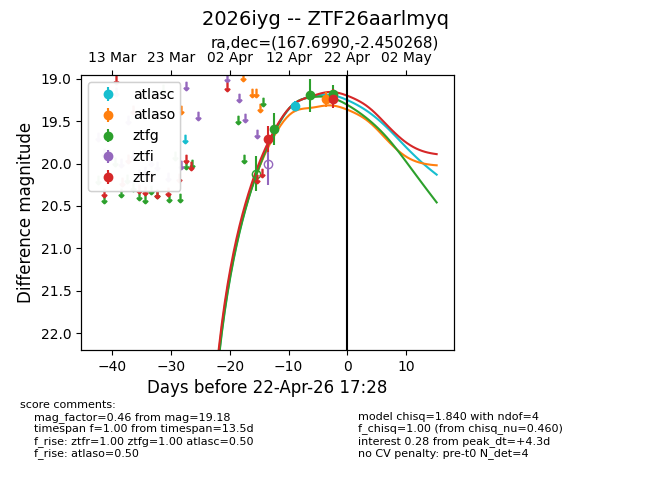
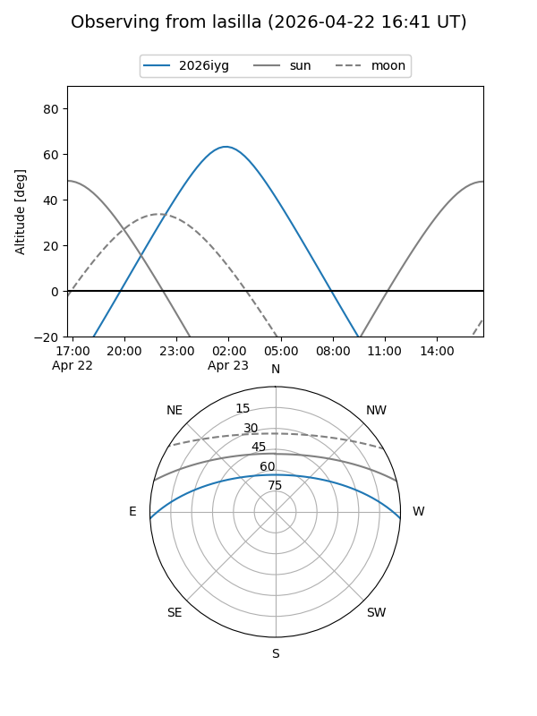
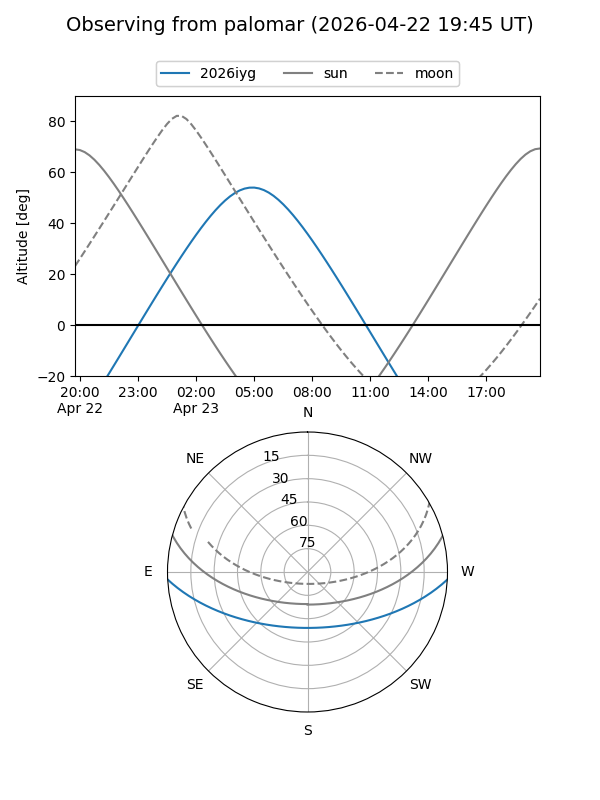
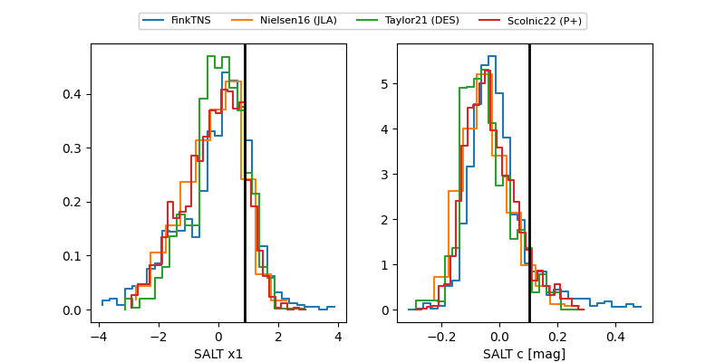

2026iyg
Target 2026iyg at 2026-04-22 17:29
Aliases and brokers:
FINK: link
Lasair: link
ALeRCE: link
TNS: link
YSE: link
alt names
ZTF26aarlmyq (ztf,fink_ztf)
2026iyg (tns,yse)
Coordinates:
equatorial (ra, dec) = 167.6990,-2.45027
equatorial (HMS+DMS) = 11:10:47.77,-02:27:00.96
galactic (l, b) = (259.6092,+51.74990)
Flags:
Photometry:
last atlasc=19.32, atlaso=19.24, ztfg=19.18, ztfr=19.24
1 atlasc, 1 atlaso, 3 ztfg, 2 ztfr detections
Lightcurve

Visibility


Additional plots
